Introduction
Connectivity is a key consideration in systematic conservation planning (Margules & Pressey 2000; Briers 2002). This is because isolated and fragmented populations are often more vulnerable to extinction (Dixo et al. 2009; Olds et al. 2012; Hodgson et al. 2009). To promote connectivity in prioritizations, a range of different approaches are available (reviewed in Balbar & Metaxas 2019). These approaches can rely solely on the spatial configuration of a prioritization to enhance structural connectivity (e.g, reducing the spatial fragmentation of a prioritization; Watts et al. 2009). They can also leverage data – such as environmental, river flow, and telemetry data – to generate prioritizations that promote functional connectivity (e.g., Hermoso et al. 2012; Dwyer et al. 2019; Leonard et al. 2017).
The aim of this tutorial is to show how connectivity can be incorporated into prioritizations using the prioritizr R package. Here we will explore various approaches for incorporating connectivity, and see how they alter the spatial configuration of prioritizations. As you will discover, many of these approaches involve setting threshold or penalty values to specify the relative importance of connectivity compared to other criteria (e.g., overall cost). For more information on calibrating these values, please see the Calibrating trade-offs tutorial.
Data
The dataset used in this tutorial was created for the Coastal Douglas-fir Conservation Partnership (CDFCP; Morrell et al. 2017). Although the original dataset covers a much larger area; for brevity, here we focus only on Salt Spring Island, British Columbia. Briefly, Salt Spring Island supports a diverse and globally unique mix of dry forest and savanna habitats. Today, these habitats are critically threatened due to land conversion, invasive species, and altered disturbance regimes. For more information on the data, please refer to the Marxan tool portal and the tool tutorial.

Extent of Coastal Douglas-fir Conservation Partnership Tool area and location of Salt Spring Island
Let’s begin by loading the packages and data for this tutorial. Since this tutorial requires the prioritizrdata R package, please ensure that it is installed. Specifically, two objects underpin the data for this tutorial. The salt_pu object specifies the planning unit data as a single-layer raster (i.e., terra::rast() object), and the salt_features object contains biodiversity data represented as a multi-layer raster (i.e., terra::rast() object).
# load packages
library(prioritizr)
library(prioritizrdata)
library(sf)
library(terra)
# load planning unit data
salt_pu <- get_salt_pu()
# load biodiversity feature data
salt_features <- get_salt_features()
# load connectivity data
salt_con <- get_salt_con()Now we will conduct some preliminary processing. Specifically, we will aggregate from the 100 m resolution to the 300 m resolution. This is to reduce the time needed to generate prioritizations in this tutorial. In practice, we generally recommend considering other criteria too – such as the spatial scale that is relevant for decision making and the resolution of available datasets – when deciding on an appropriate scale for planning units.
# aggregate data to coarser resolution
salt_pu <- aggregate(salt_pu, fact = 3)
salt_features <- aggregate(salt_features, fact = 3)
salt_con <- aggregate(salt_con, fact = 3)Next, let’s have a look at the salt_pu object. Here each grid cell represents a planning unit, and the grid cell values denote acquisition costs (BC Assessment 2015). To aid with visualization, we will log-transform the values when plotting them on a map.
# print planning unit data
print(salt_pu)## class : SpatRaster
## dimensions : 94, 67, 1 (nrow, ncol, nlyr)
## resolution : 300, 300 (x, y)
## extent : 454589.9, 474689.9, 5394414, 5422614 (xmin, xmax, ymin, ymax)
## coord. ref. : WGS 84 / UTM zone 10N (EPSG:32610)
## source(s) : memory
## name : cost
## min value : 0.02552
## max value : 8290.38317
# plot map showing the planning units costs on a log-scale
plot(log(salt_pu), main = "Planning unit costs (log)", axes = FALSE)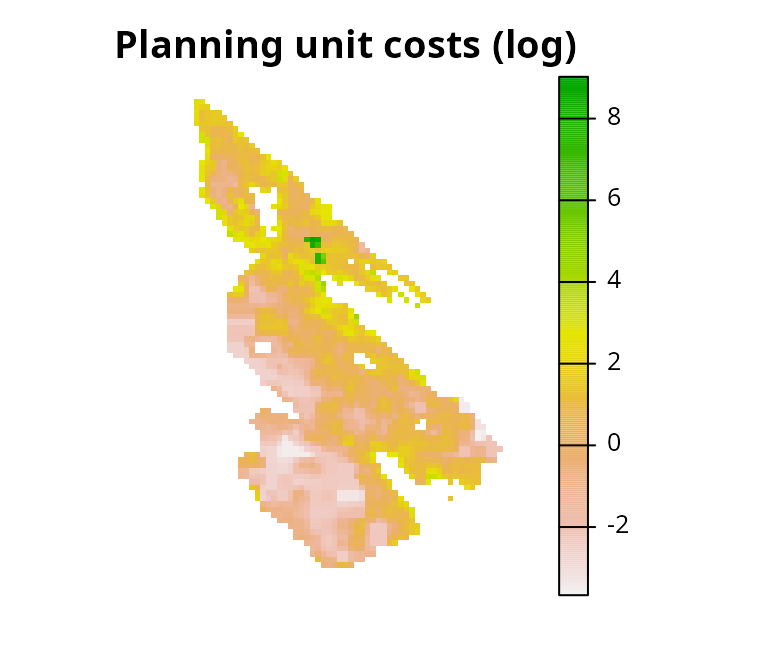
Next, let’s look at the salt_features object. It has multiple layers. Each layer corresponds to different ecological communities (i.e., Old Forest, Savannah, Wetland, and Shrub communities), and their cell values indicate the probability of encountering a bird species associated a given community.
# print feature data
print(salt_features)## class : SpatRaster
## dimensions : 94, 67, 4 (nrow, ncol, nlyr)
## resolution : 300, 300 (x, y)
## extent : 454589.9, 474689.9, 5394414, 5422614 (xmin, xmax, ymin, ymax)
## coord. ref. : WGS 84 / UTM zone 10N (EPSG:32610)
## source(s) : memory
## names : old forest, savanna, wetland, shrub
## min values : 0.4235421, 0.3355335, 0.1485069, 0.4415211
## max values : 0.8951858, 0.6440319, 0.5441603, 0.8065580
# plot map showing the feature data
plot(salt_features, axes = FALSE)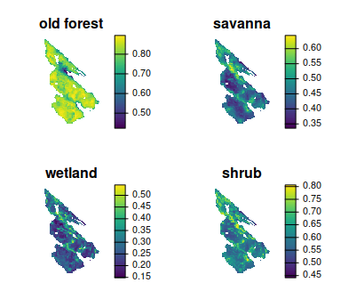
Let’s look at the salt_con object. It describes the inverse probability of occurrence of human commensal species. Here we will assume that human modified areas impede connectivity for native species, and so cells with higher values will have greater connectivity.
# print connectivity data
print(salt_con)## class : SpatRaster
## dimensions : 94, 67, 1 (nrow, ncol, nlyr)
## resolution : 300, 300 (x, y)
## extent : 454589.9, 474689.9, 5394414, 5422614 (xmin, xmax, ymin, ymax)
## coord. ref. : WGS 84 / UTM zone 10N (EPSG:32610)
## source(s) : memory
## name : inverse human
## min value : 0.4060181
## max value : 0.8969550
# plot map showing the connectivity data
plot(salt_con, axes = FALSE)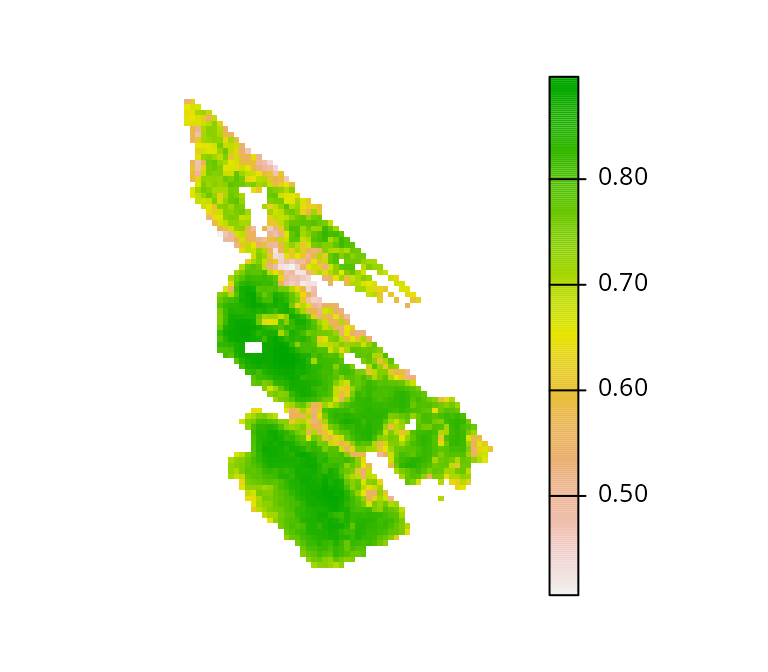
Baseline problem
In this tutorial, we will explore a few different ways of incorporating connectivity into prioritizations. To enable comparisons among prioritizations based on different approaches, we will first create a baseline problem formulation that we will subsequently customize to incorporate connectivity. Specifically, we will formulate the baseline problem using the minimum set objective. We will use representation targets of 17% – based on Aichi Biodiversity Target 11 – to provide adequate coverage of each ecological community. Additionally, because land properties on Salt Spring Island can either be acquired in their entirety or not at all, we will use binary decision types. This means that planning units are either selected in the solution or not selected in the solution—planning units cannot be partially acquired. Given all these details, let’s formulate the baseline problem.
# create problem
p0 <-
problem(salt_pu, salt_features) %>%
add_min_set_objective() %>%
add_relative_targets(0.17) %>%
add_binary_decisions() %>%
add_default_solver()
# print problem
print(p0)## A conservation problem (<ConservationProblem>)
## ├•data
## │├•features: "old forest", "savanna", "wetland", and "shrub" (4 total)
## │└•planning units:
## │ ├•data: <SpatRaster> (2010 total)
## │ ├•costs: continuous values (between 0.0255 and 8290.3832)
## │ ├•extent: 454589.8809, 5394413.7968, 474689.8809, 5422613.7968 (xmin, ymin, xmax, ymax)
## │ └•CRS: WGS 84 / UTM zone 10N (projected)
## ├•formulation
## │├•objective: minimum set objective
## │├•penalties: none specified
## │├•targets: relative targets (between 0.17 and 0.17)
## │├•constraints: none specified
## │└•decisions: binary decision
## └•optimization
## ├•portfolio: shuffle portfolio (`number_solutions` = 1, …)
## └•solver: gurobi solver (`gap` = 0.1, `time_limit` = 2147483647, `first_feasible` = FALSE, …)
## # ℹ Use `summary(...)` to see complete formulation.After formulating the baseline problem, we can solve it to generate a prioritization.
# solve problem
s0 <- solve(p0)
# print solution
print(s0)## class : SpatRaster
## dimensions : 94, 67, 1 (nrow, ncol, nlyr)
## resolution : 300, 300 (x, y)
## extent : 454589.9, 474689.9, 5394414, 5422614 (xmin, xmax, ymin, ymax)
## coord. ref. : WGS 84 / UTM zone 10N (EPSG:32610)
## source(s) : memory
## name : cost
## min value : 0
## max value : 1
# plot solution
plot(
s0, main = "Baseline prioritization", axes = FALSE,
type = "classes", col = c("grey70", "darkgreen")
)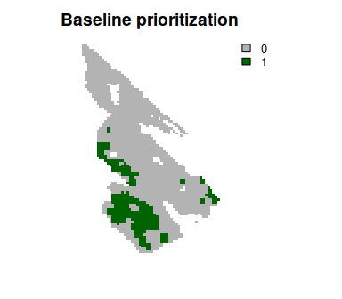
Next, let’s explore some options for incorporating connectivity.
Adding constraints
Let’s explore approaches for promoting connectivity in prioritizations by adding constraints to the baseline problem formulation. These approaches ensure that prioritizations exhibit certain characteristics (e.g., ensure prioritizations form a contiguous reserve; Önal & Briers 2006). This means that, regardless of the optimality gap used to generate a prioritization, the prioritization will always exhibit these characteristics.
Neighbor constraints
Neighbor constraints can be added to ensure that each selected planning unit has a certain number of neighbors surrounding it (using the add_neighbor_constraints() function) (based on Billionnet 2013). The k parameter can be used to specify the required number of neighbors for each selected planning unit. Let’s generate a prioritization by specifying that each planning unit requires at least three neighbors.
# create problem with added neighbor constraints and solve it
s1 <-
p0 %>%
add_neighbor_constraints(k = 3) %>%
solve()
# plot solutions
plot(
c(s0, s1), main = c("baseline", "neighbors constraints"),
axes = FALSE, type = "classes", col = c("grey70", "darkgreen")
)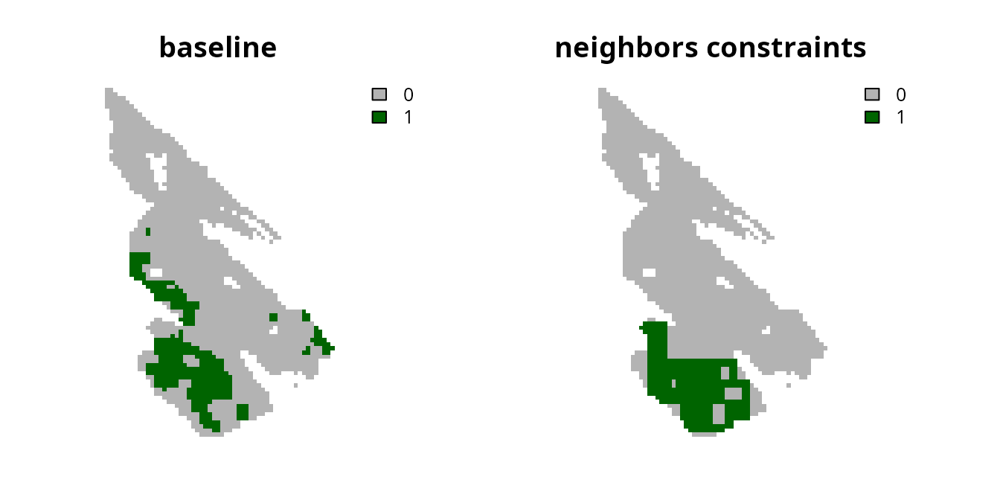
Contiguity constraints
Contiguity constraints can be added to ensure that all planning units form a single contiguous reserve (using the add_contiguity_constraints() function) (similar to Önal & Briers 2006). These constraints are extremely complex. As such, they can only be applied to small conservation planning problems and the Gurobi solver is required to solve them in a feasible period of time. Since it would take a long time to generate a near-optimal prioritization for this dataset with contiguity constraints, we will also tell the solver to simply return the first solution that it finds which meets the representation targets and the contiguity constraints.
# create problem with added contiguity constraints and solve it
s2 <-
p0 %>%
add_contiguity_constraints() %>%
add_gurobi_solver(first_feasible = TRUE) %>%
solve()## Warning: Overwriting previously defined solver.
# plot solutions
plot(
c(s0, s2), main = c("baseline", "contiguity constraints"),
axes = FALSE, type = "classes", col = c("grey70", "darkgreen")
)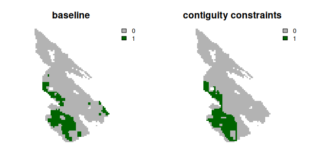
There is also an even more complex version of the contiguity constraints that is available. These constraints – termed feature contiguity constraints (similar to Cerdeira et al. 2010) – can be added to ensure that all of the selected planning units used to the reach representation targets within a prioritization form a contiguous network for each feature (using the add_feature_contiguity_constraints() function). In other words, they ensure that each feature can disperse through the prioritization to access a target threshold amount of habitat. However, these constraints are extraordinarily complex, only feasible for small problems, and require preprocessing routines to identify initial solutions. As such, we will not consider them in this tutorial.
Linear constraints
Linear constraints can be used to specify that the prioritizations must meet an arbitrary set of criteria. As such, they can be used to ensure that prioritizations provide adequate coverage of planning units that have facilitate a high level of connectivity. Recall that the salt_con data are used to describe connectivity across the study area. Since higher values denote planning units with greater connectivity, we could use linear constraints to ensure that the total sum of connectivity values – based on this dataset – meets a particular threshold (e.g. cover at least 30% of the total amount). This would effectively be treating connectivity as an additional feature (similar to Daigle et al. 2020).
# compute threshold for constraints
## here we use a threshold of 30% of the total connectivity values
threshold <- global(salt_con, "sum", na.rm = TRUE)[[1]] * 0.3
# print threshold
print(threshold)## [1] 449.6104
# create problem with added linear constraints and solve it
s3 <-
p0 %>%
add_linear_constraints(
data = salt_con, threshold = threshold, sense = ">="
) %>%
solve()
# plot solutions
plot(
c(s0, s3), main = c("baseline", "linear constraints"),
axes = FALSE, type = "classes", col = c("grey70", "darkgreen")
)
Although using continuous values has the advantage that the prioritization process can explicitly account for differences in the relative amount of connectivity facilitated by different planning units, the disadvantage is that the prioritization could potentially focus on selecting lots of planning units with low connectivity values. To avoid this result, one strategy is to convert the continuous values into binary values using a threshold limit (similar to Carroll 2021). By applying such a threshold limit, linear constraints can then be used to ensure that the prioritization selects a minimum amount of planning units with high connectivity values (i.e., those with connectivity values that are equal to or greater than the threshold limit).
# calculate threshold limit
## here we set a threshold limit based on the median
threshold_limit <- global(
salt_con, fun = quantile, na.rm = TRUE, probs = 0.5
)[[1]]
# convert continuous values to binary values
salt_con_binary <- round(salt_con >= threshold_limit)
# plot binary values
plot(salt_con_binary, main = "salt_con_binary", axes = FALSE)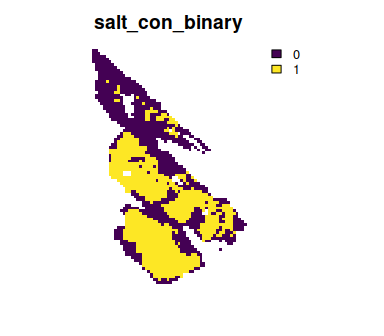
# create problem with added linear constraints and solve it
## note that we use the original threshold computed before,
## to ensure the prioritization covers at least 30% of the total amount
## connectivity values
s4 <-
p0 %>%
add_linear_constraints(
data = salt_con_binary, threshold = threshold, sense = ">="
) %>%
solve()
# plot solutions
plot(
c(s0, s4), main = c("baseline", "linear constraints (binary)"),
axes = FALSE, type = "classes", col = c("grey70", "darkgreen")
)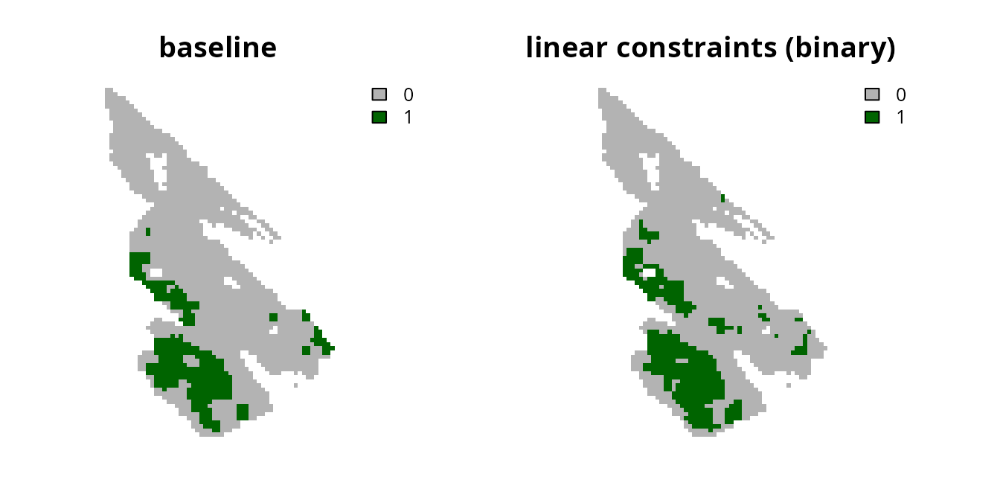
Another strategy is to clamp the continuous values below a threshold limit and assign them a value of zero (similar to Hanson et al. 2020). This strategy has the advantage that (i) the prioritization won’t focus on selecting lots of planning units with low connectivity values to meet the constraint threshold, and (ii) the optimization process can use semi-continuous values to distinguish between places that can facilitate a moderate amount and a high amount of connectivity.
# clamp continuous values using the threshold limit we computed before
salt_con_clamp <- salt_con
salt_con_clamp[salt_con <= threshold_limit] <- 0
# plot clamped values
plot(salt_con_clamp, main = "salt_con_clamp", axes = FALSE)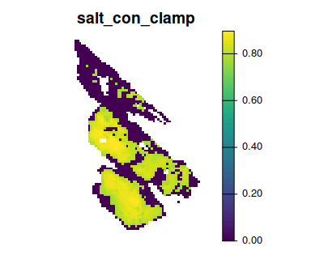
# create problem with added linear constraints and solve it
## note that we use the original threshold computed before,
## to ensure the prioritization covers at least 30% of the total amount
## connectivity values
s5 <-
p0 %>%
add_linear_constraints(
data = salt_con_clamp, threshold = threshold, sense = ">="
) %>%
solve()
# plot solutions
plot(
c(s0, s5), main = c("baseline", "linear constraints (clamped)"),
axes = FALSE, type = "classes", col = c("grey70", "darkgreen")
)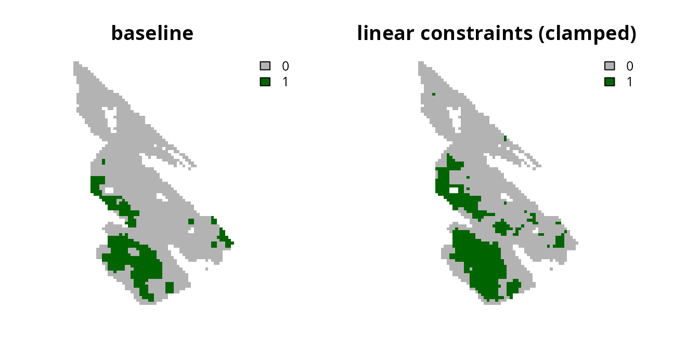
If we were concerned that the prioritization did not facilitate a high enough level of connectivity, we could increase the threshold value or the threshold_limit value. For example, let’s increase the threshold_limit value used to clamp the continuous connectivity values.
# compute threshold limit
threshold_limit2 <- global(
salt_con, fun = quantile, na.rm = TRUE, probs = 0.7
)[[1]]
# clamp continuous values using the new threshold limit
salt_con_clamp2 <- salt_con
salt_con_clamp2[salt_con <= threshold_limit2] <- 0
# plot clamped values
plot(salt_con_clamp2, main = "salt_con_clamp", axes = FALSE)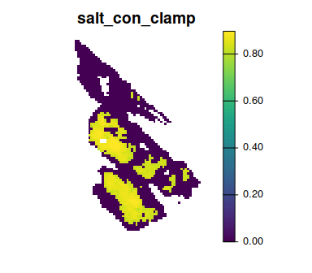
# create problem with added linear constraints and solve it
## note that we use the original threshold computed before,
## to ensure the prioritization covers at least 30% of the total amount
## connectivity values
s6 <-
p0 %>%
add_linear_constraints(
data = salt_con_clamp2, threshold = threshold, sense = ">="
) %>%
solve()
# plot solutions
plot(
c(s0, s6), main = c("baseline", "linear constraints (clamped 2)"),
axes = FALSE, type = "classes", col = c("grey70", "darkgreen")
)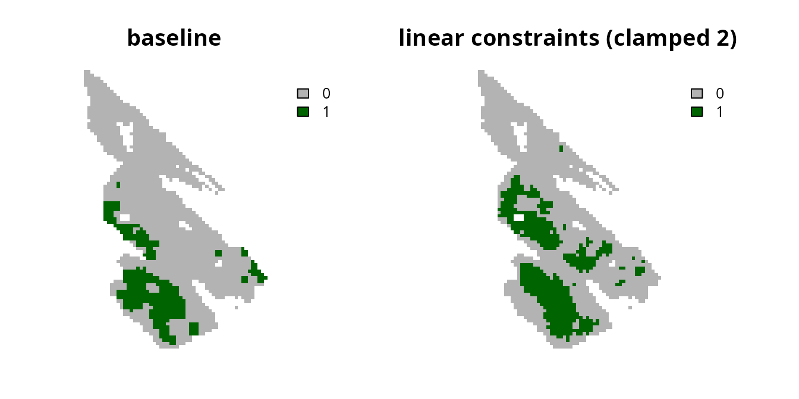
Despite the advantages of clamping the connectivity values, we can see that the prioritization has a relatively high level of spatial fragmentation. In fact, all prioritizations generated using the linear constraints can potentially have this issue. This is because linear constraints do not explicitly account for the spatial arrangement of the planning units. As such, we recommend combining the linear constraints approach with another approach [e.g., the boundary penalties approach discussed below; Carroll (2021)].
Adding penalties
Now let’s explore approaches for promoting connectivity in prioritizations by adding penalties to the baseline problem formulation. These approaches involve penalizing solutions according to certain criteria (e.g., penalize spatial fragmentation of prioritizations; Watts et al. 2009). Unlike constraint-based methods for incorporating connectivity – if the optimality gap used to generate a prioritization is too high – they may not necessarily produce prioritizations that exhibit desirable characteristics.
Boundary penalties
Boundary penalties can be used to reduce the spatial fragmentation of prioritizations (using the add_boundary_penalties() function). Specifically, these penalties update the problem formulation to penalize solutions that have a high total amount of exposed boundary length (Ball et al. 2009). Since boundary data often have large values which can degrade solver performance and result in excessive run times (see the Calibrating trade-offs tutorial for details), we will first rescale the boundary data.
# precompute the boundary data
salt_boundary_data <- boundary_matrix(salt_pu)
# rescale boundary data
salt_boundary_data <- rescale_matrix(salt_boundary_data)Next, let’s generate a prioritization using boundary penalties. To specify the relative importance of reducing spatial fragmentation – compared with the primary objective of a problem (e.g. minimizing cost) – we need to set a value for the penalty parameter. Setting a higher value for penalty indicates that it is more important to avoid highly fragmented solutions. Let’s generate a prioritization with a penalty value of 0.001.
# create problem with added boundary penalties
s7 <-
p0 %>%
add_boundary_penalties(penalty = 0.001, data = salt_boundary_data) %>%
solve()
# plot solutions
plot(
c(s0, s7), main = c("baseline", "boundary penalties (0.001)"),
axes = FALSE, type = "classes", col = c("grey70", "darkgreen")
)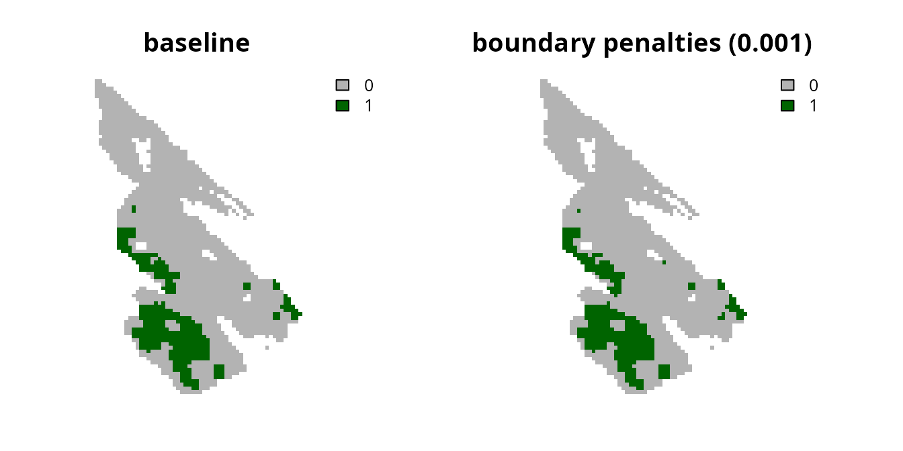
We can see that the resulting prioritization is still relatively fragmented, so let’s try generating another prioritization with a higher penalty value.
# create problem with increased boundary penalties
s8 <-
p0 %>%
add_boundary_penalties(penalty = 10, data = salt_boundary_data) %>%
solve()
# plot solutions
plot(
c(s0, s8), main = c("baseline", "boundary penalties (10)"),
axes = FALSE, type = "classes", col = c("grey70", "darkgreen")
)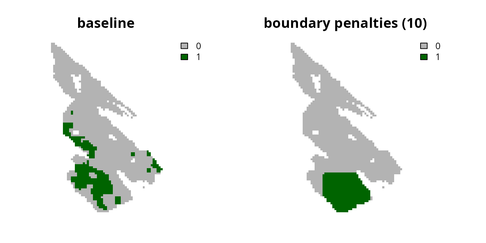
Although the prioritization is now less fragmented, it has also selected a greater number of planning units. Let’s calculate the cost of the prioritizations to see how they vary in overall cost.
# calculate cost of baseline prioritization
eval_cost_summary(p0, s0)## # A tibble: 1 × 2
## summary cost
## <chr> <dbl>
## 1 overall 36.0
# calculate cost of prioritization with low boundary penalties (i.e., 0.001)
eval_cost_summary(p0, s7)## # A tibble: 1 × 2
## summary cost
## <chr> <dbl>
## 1 overall 46.2
# calculate cost of prioritization high low boundary penalties (i.e., 0.1)
eval_cost_summary(p0, s8)## # A tibble: 1 × 2
## summary cost
## <chr> <dbl>
## 1 overall 318.We can see that the cost of the prioritizations increase with when we use higher penalty values. This is because there is a trade-off between the cost of a prioritization and the level of spatial fragmentation. Although it can be challenging to find the best balance, there are qualitative and quantitative methods available to help navigate such trade-offs. Please see the Calibrating trade-offs tutorial for a details on these methods.
Connectivity penalties
Connectivity penalties can be used to promote connectivity in prioritizations (using the add_connectivity_penalties() function). These penalties use connectivity scores to parametrize the strength of connectivity between pairs of planning units (Beger et al. 2010). Thus higher scores denote a greater level of connectivity between different planning units. For example, previous studies have parametrized connectivity scores using habitat quality, environmental, and river flow data (e.g. Leonard et al. 2017; Alagador et al. 2012; Hermoso et al. 2012). Although there are many approaches to calculate connectivity scores, one approach involves using conductance data – data that describe how much each planning unit facilitates movement (opposite of landscape resistance data) – and calculating scores for each pair of planning units by averaging their conductance values (implemented using the connectivity_matrix() function).
Let’s compute connectivity scores by treating the salt_con object as conductance data. This means that we assume that neighboring planning units with higher values in the salt_con object are capable of facilitating a greater amount of connectivity. Note that the data used to compute connectivity scores must conform to the same spatial properties as the planning unit data (e.g., resolution, spatial extent, coordinate reference system). Also, although we are using raster data here, these scores can also be computed for vector data too (e.g., sf::st_sf() objects). Similar to the boundary data, we will also rescale the connectivity scores to avoid numerical issues during optimization.
# compute connectivity scores
salt_con_scores <- connectivity_matrix(salt_pu, salt_con)
# rescale scores
salt_con_scores <- rescale_matrix(salt_con_scores)After computing the connectivity scores, we can use them to generate prioritizations using connectivity penalties. Similar to the boundary penalties, we use the penalty parameter to specify the relative importance of promoting connectivity relative to the primary objective of a problem (i.e., minimizing overall cost). Let’s generate a prioritization with a penalty value of 0.001.
# create problem with added connectivity penalties
s9 <-
p0 %>%
add_connectivity_penalties(penalty = 0.0001, data = salt_con_scores) %>%
solve()
# plot solutions
plot(
c(s0, s9), main = c("baseline", "connectivity penalties (0.001)"),
axes = FALSE, type = "classes", col = c("grey70", "darkgreen")
)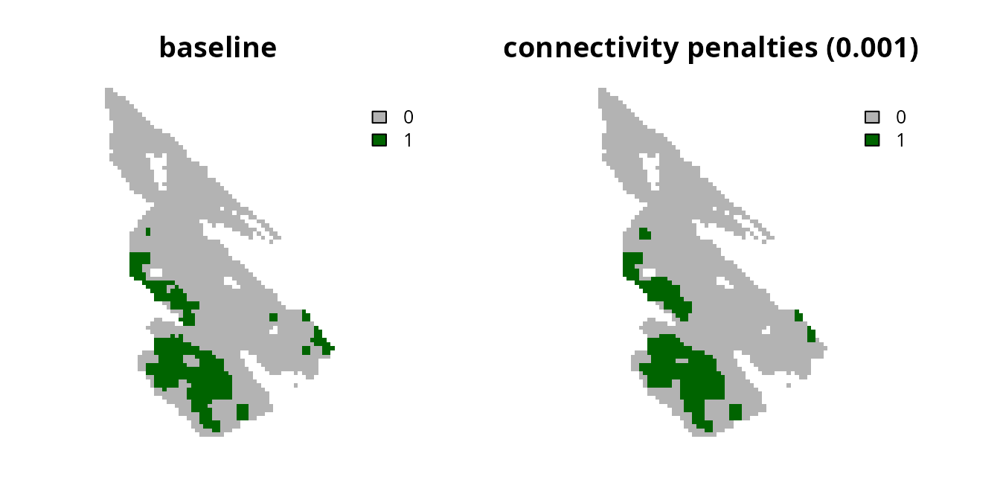
Now let’s try generating another prioritization with a higher penalty value.
# create problem with increased connectivity penalties
s10 <-
p0 %>%
add_connectivity_penalties(penalty = 0.0002, data = salt_con_scores) %>%
solve()
# plot solutions
plot(
c(s0, s10), main = c("baseline", "connectivity penalties (0.002)"),
axes = FALSE, type = "classes", col = c("grey70", "darkgreen")
)
We can see that increasing the penalty parameter causes the prioritizations to select planning units in regions with greater connectivity values (i.e., per the salt_con object). As discussed with the boundary penalties, increasing the penalty value tells the optimization process to focus more on promoting connectivity—meaning that it won’t focus as much on the primary objective (i.e., because the primary objective is to minimize overall costs). For details on calibrating these trade-offs please see the Calibrating trade-offs tutorial. Note that you will need to the use eval_connectivity_summary() function – instead of the eval_boundary_summary() function – when adapting the tutorial code for connectivity penalties.
Conclusion
Hopefully, this tutorial has provided a helpful introduction for incorporating connectivity into prioritizations. Broadly speaking, we recommend using the boundary penalties or the connectivity penalties to ensure that prioritizations explicitly account for the spatial configuration of selected planning units. Additionally, though not fully explored here, the connectivity penalties are a very flexible approach for promoting connectivity. For instance, in addition to parametrizing pair-wise connectivity scores for neighboring planning units, they can also be used to parametrize pair-wise connectivity scores between more distant planning units. Thus connectivity penalties could be used to parametrize connectivity across both small and large spatial scales (e.g., using a scaling procedure wherein connectivity scores between pairs of planning units decline with the distance between them).